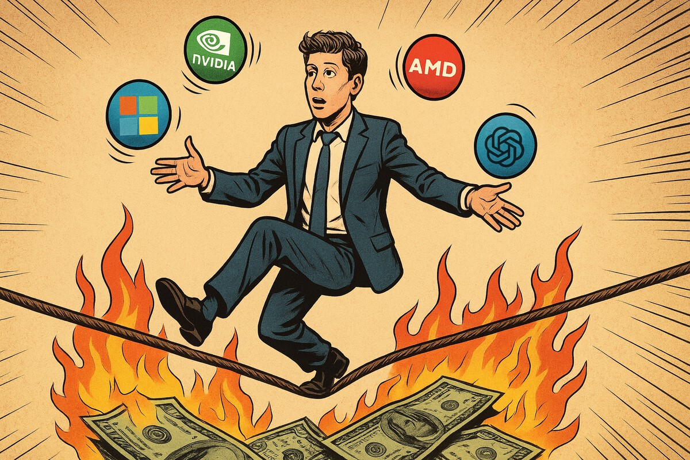

OpenAI y AMD acaban de firmar algo más que un acuerdo de IA: es el trueque de la desesperación

OpenAI y AMD han sellado un acuerdo descomunal... sin intercambiar efectivo: warrants por chips. Ambos tienen motivos para buscar un trueque desesperado
OpenAI acaba de anunciar que comprará 6 gigavatios de GPUs de AMD. No con dinero en efectivo, sino con warrants: AMD emite a OpenAI el derecho a comprar hasta 160 millones de sus acciones si cumple hitos de compra escalonados. Una empresa que pierde 2.500 millones cada seis meses acaba de comprometerse a un despliegue masivo de infraestructura. Y lo hará, al menos de momento, sin soltar ni un duro.
OpenAI ha titulado el comunicado de esta operación en su blog como un 'strategic parnertship', pero más bien es un trueque de supervivencia mutua disfrazado de alianza empresarial.
1. AMD necesita desesperadamente existir como alternativa creíble a NVIDIA. Aunque eso signifique vender su propio capital en lugar de solo chips.
2. OpenAI necesita escapar de su dependencia total de un solo proveedor que ya tiene demasiado poder de negociación.
Conclusión:
Puede que tengan razón. O puede que dentro de cinco años este acuerdo aparezca en las escuelas de negocio como caso de estudio sobre cómo una industria entera decidió que las matemáticas eran optativas. El mercado, mientras tanto, sube un 30%. Porque nada dice "fundamentos sólidos" como financiarte vendiendo acciones de ti mismo para comprar cosas que no puedes pagar.